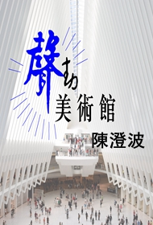

讓聆聽成為新時代的閱讀方式！
-
歷史為什麼讓我們笑
王偉忠VS張大春,兩人將以對談形式展現發笑對話的最高境界,說歷史為什麼讓我們發笑,這對談主題由張大春親自提出,向來滿腹詩書,信口成章的兩人,誓言要作場不一樣的顛覆對談,全場沒有嚴肅正經的歷史論述,只有一段段說古論今,體現現代情境的荒繆笑果.試想: 周幽王為求褒姒一笑，點燃烽火，戲弄諸侯的情節到五十步笑百步”的成語，乃至蘇軾的《蝶戀花》：「……牆裡鞦韆牆外道，牆外行人牆裡佳人笑……」等,這點點滴滴的經典陳跡,已成歷史,令人發笑，讓人不知所以!
-
村上春樹短篇集
日本文學一個最主要的傳統特點就是委婉細膩，富於陰柔之美，善於用小場景、小情節、小道具來傳達人物豐富多變、細小微妙的心理感受、情趣和意緒，營造出令人心旌搖曳的傷感、悲憫和韻味綿長的藝術情調。在村上筆下，這樣的情調、韻致、氛圍可謂隨處可見，而且經營得出神入化，曲盡其妙。作者自己也說過：“我的確非常喜歡日常生活中無所謂的細節性風景，非常喜歡觀察各種各樣的人是怎樣通過這些細節同世界發生關係，以及這些無關緊要的瑣事是怎樣得以發生的，我對此非常有興趣”。
-
瓦舍說金庸
你，看過、玩過金庸、就是沒聽過【相聲瓦舍】說金庸！這次，來點不一樣！ 馮翊綱編劇、與鐵板搭檔宋少卿同台演出。不管有沒有讀過金庸小說，只要看了場演出，都要給你不同的武俠官感，金庸小說的江湖歷險、兒女柔情、古典文史滲入相聲劇，幻化《瓦舍說金庸》，帶你穿越時空，行俠仗義！
-
消失的931
西元1673年，人類歷史上發生了一場驚天地泣鬼神的戰爭，北京城裡的康熙皇上，聽說地處雲南的吳三桂正在悄悄地發展生化武器，於是派出得力助手：驍騎營都統、御賜黃馬褂、頭戴三眼花翎、一等鹿鼎公，韋小寶前往討伐…
-
誰殺了羅伯特?
故事從一樁完美的謀殺案開始，隨著嫌疑犯陸續登場，犯案動機被一一揭露，眼看真相就要大白，命案關鍵人物馮翊綱卻被踢爆暗中兼差情趣伴侶，專精小遊戲！而一向花心的宋少卿，難得一次專情，為何卻搞出人命！？美艷女明星、超猛水電工、性感人妻、女高中生、還有七八十歲的老婆婆，到底誰是兇手？馮翊綱、宋少卿又有什麼不可告人的秘密呢？
-
春夏秋冬
【相聲瓦舍】首齣原創相聲劇《春夏秋冬》又名《蠢嘎揪疼》，表現不負眾望，一展相聲基本功連珠炮「貫口」，披露全民運動樂透彩的真面目。本劇上下場各有兩個段子，分別春、夏、秋、冬四季，代表人生總是悲歡離合、交織迴盪的過程，以爆笑又不失幽默的表演方式呈現人生的驚喜、感歎、悸動與感傷!
-
大唐馬屁精
《大唐馬屁精》是【相聲瓦舍』一段藉古諷今的相聲，首演是在1999年12月1-6日，正好是在 921 大地震、總統大選、政黨輪替、國民黨分裂的那個日子，這些都是很有趣的題材，再搭配中國淵遠流長的馬屁文化，整部戲少有冷場。
-
吳間道
電影版無間道裡黑道、白道互相擺道； 相聲大師吳兆南睽違三年新作這回不靠拳腳，不費槍械，帶著眾徒孫踩上星光大道！
-
藝曲趣教遊之對口相聲
國文，幹嘛這麼背？傳統說唱跨足國文教學的瘋狂想法！專治：古文消化不良症候群、看到文言文發囧rz症！承天寺Ya遊國台語互尬，讓蘇東坡笑到發麻！中式RAP溜出賣油翁，歐陽脩直推讃！偉人傳顛覆偉人嚴肅形象、賣鬼穿梭陰陽兩界現身站臺！
-
龍唬逗
集結團內最精采的演員組合，將傳統藝術中心駐點演出「說唱龍年」中受歡迎的節目《周處除三害》、《龍宮借神鐵》在劇場中精緻重現！融入歡樂的小品劇、對口相聲以及本團獨家的口技相聲。
-
說書唱曲談今古
專業的林文彬已是台灣竹板第一人，風靡無數海內外觀眾。但林不只是竹板王子，此次他將使出渾身解數，為觀眾帶來由京韻大鼓、竹板、單弦與奉調大鼓乃至對口相聲等交織而成的〝林來瘋〞曲藝之夜。
-
李建復告訴你：成就一生的10個好習慣
我們一直在找尋可以使人功成名就的速成方法！殊不知，「成功」近在眼前，只要稍微改變一下我們的生活習慣，就可以搭上成功列班車，培養10種生活好習慣，成功真的就在不遠處。現在讓李建復告訴你:成就一生的10個好習慣，讓你和成功不再擦肩而過，現在快付諸行動吧！
-
紓壓放鬆法門
順著雙腦同步的聲音訊號，溫和地引導你進入深沉而易接受的放鬆狀態。這時，你將聽到傳遞正面訊息，內容純淨無暇，零壓力的聽覺享受，加強減壓幫助放鬆，學習正確放鬆的方法，享受徹底進入輕鬆的自在。
-
蹦蹦占卜屋
隨著天氣的變化對每個人都帶來影響 ，鐵口不直斷，揭開這神秘的面紗，帶領大家盛開笑顏，一探究竟！
-

聲動美術館-陳澄波
藝術生活化，生活藝術化，這是人類欣賞進而參與藝術的最終目標。無論是過去的經典作品或今日的現代創作，都是反映著每個時代的人類生活和社會狀況，「聲動美術館」希望藉由藝術作品穿越時空，從不同角度去了解成就現今社會局勢的歷史脈絡。本節目由央廣與台北市立美術館合作，結合專業的知識和故事的分享，讓聽眾可以對台灣畫家有基本且完整的認識之外，也希望藉此激發聽眾興趣，進一步主動欣賞畫家作品。
-
30個台灣地景故事
蘭嶼島為什麼叫做蘭嶼？半屏山是怎麼來的？基隆的仙洞以前為什麼叫白米壺？土地公為什麼在玉山山頂晒白銀？阿里山的姑娘真的美如水？管家琪以輕鬆、知性的說故事方式，告訴大家臺灣30個地景故事，讓我們知道臺灣在人文與地理景觀上的變化，同時了解臺灣、認識臺灣。
-
美食上菜之雞蛋類
蛋的料理方式有很多，水煮蛋、煎蛋、滷蛋、炒蛋、蒸蛋，不論是單獨做成荷包蛋、水煮蛋或炒蛋，或是夾進吐司麵包裡，最基本卻也最營養好吃。雞蛋中含有DHA和卵磷脂等，能健腦益智，避免老年人智力衰退，雞蛋中的維生素A能保護黏膜組織的完整並維持正常視覺。
-
夏韻芬的親子理財課
夏韻芬的親子理財課第1-6集，從小讓孩子養成正確的金錢觀，懂得愛惜物力。留錢給孩子，無法成全孩子的財富，正確的做法，就是教他面對金錢的態度，以及學習處理金錢的本事，讓孩子可以靠自己的能力經營自己的生活，這才是父母給與子女的真正資產。
-
財富的秘密
林偉賢把慈濟精神融入所教課程，即使一個人得花上超過30萬台幣的學費，還是讓企業家們趨之若鶩。全球最大電子商務網站、阿里巴巴集團董事會主席馬雲，人稱「口才帝」，說話素來以幽默、直指要害、善於激勵而出名，也曾特地去上林偉賢的課。
-
聖嚴法師佛曲集
以聖嚴法師深刻雋永的智慧法語，由音樂界各菩薩發心譜曲，法鼓山僧團及法鼓山成人學佛合唱團共同演唱，十首佛曲作品意境各有不同，時而寬廣契闊，時而輕快活潑。經過五個月的籌備時間，從選曲、練唱，到進錄音室，史上難得法師參與錄製的佛曲音樂作品終於完成！
-
佛說阿彌陀經
大乘佛教經典之一，為凈土宗所尊崇，被列為凈土三經之一。此經於前半段宣說西方極樂世界的種種莊嚴以及阿彌陀佛佛號由來與意義；其後闡明勸導眾生誦念阿彌陀佛之名號以往生西方極樂世界；最後十方諸佛亦勸導其土眾生相信阿彌陀佛及其極樂世界之事跡作結。